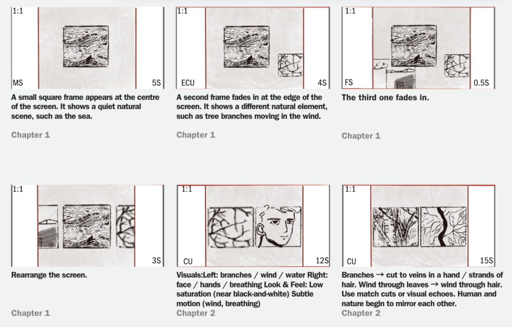
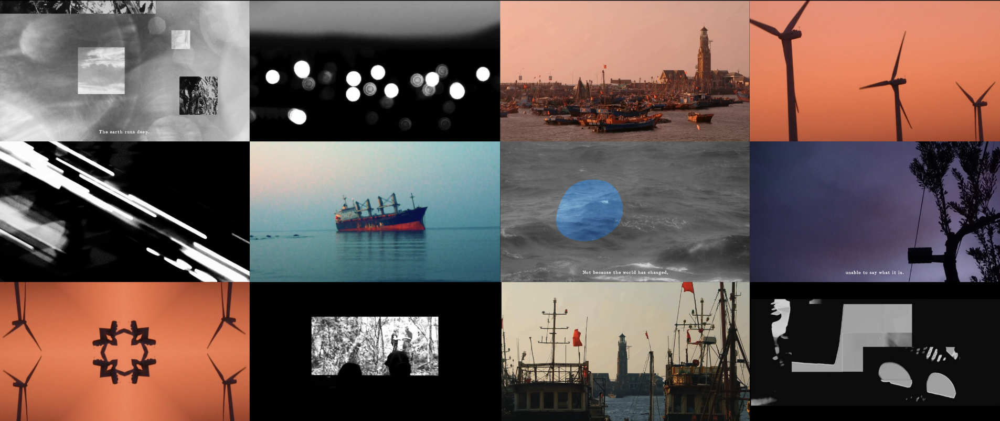

This is a five-minute poetic and experimental visual short film. Centered on "cognitive awakening, emotional collision, inner retrospection and spiritual perseverance between humanity and the world", the work consists of five progressive chapters that jointly form a complete closed loop of spiritual growth. Through expressive cinematography, gradual color evolution and dynamic shifts in aspect ratio, the film visualizes humanity’s complete inner spiritual journey: starting from the pure initial observation of the world, moving on to confronting the impact of complex reality, escaping into dreams for spiritual refuge, and ultimately returning to one’s true self with steady faith. Abandoning traditional plot-driven narration, the short film conveys inner emotions and profound spiritual reflections through pure visual texture. With minimalist visual poetry, it delivers a profound internal monologue about perception, growth, loss and belief.
Sony A6400
iphone 14
Casio
Divided into five progressive chapters, this short film traces inner growth and spiritual transformation, forming a complete spiritual journey from perceiving the outer world to recognizing the inner self. Chapter One adopts a pure, observational perspective like a newborn gazing at the world, with no subjective emotion or prejudice, showing all things in their most original and authentic state. Chapter Two marks self-awakening, centered on seeing and being seen. Humans and the world are no longer isolated; the individual begins to sense their own existence and position within the surroundings. Chapter Three shifts into an unstable visual rhythm, using turbulent audiovisual language to externalize the impact, inner conflict and spiritual weight brought by complex reality. Chapter Four takes dreams as a key turning point; seemingly light and romantic, it metaphorically represents escapism — beautiful, yet fragile and unreal. The final chapter returns to the theme of belief. After observation, awakening, turbulence and loss, the film arrives at a firm choice: to stay true to oneself and keep believing, even in a complicated world. Form equals emotion, and aspect ratio equals state of mind. Starting in black-and-white, the film gradually introduces color to reflect the enrichment of cognition and inner emotion. In terms of framing, the film begins with a rigid 1:1 square ratio for pure, limited perception. It expands to 16:9, then stretches to a wide 2:1, broadening the visual field while creating visual imbalance and inner unrest. Finally, the frame returns to 16:9, stepping back from illusion into reality, and completing a closed-loop journey from purity and confusion to escape and final spiritual perseverance.

